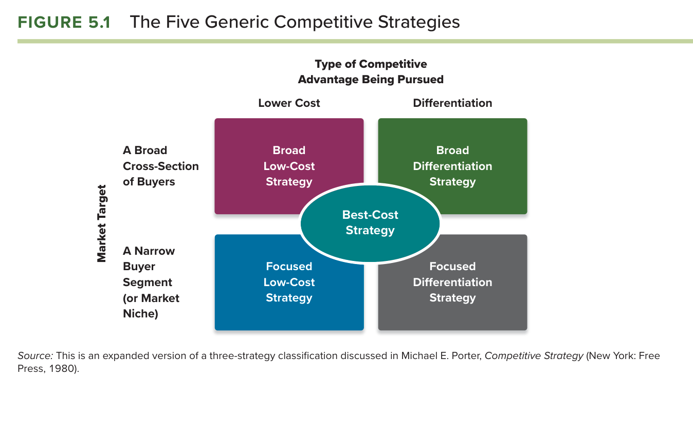
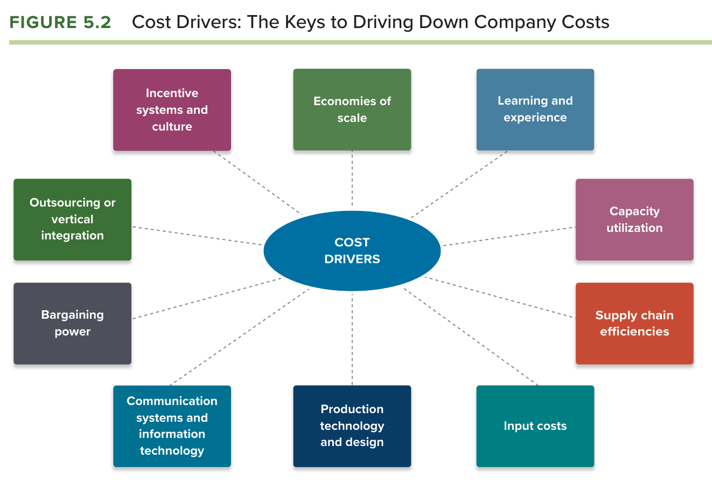
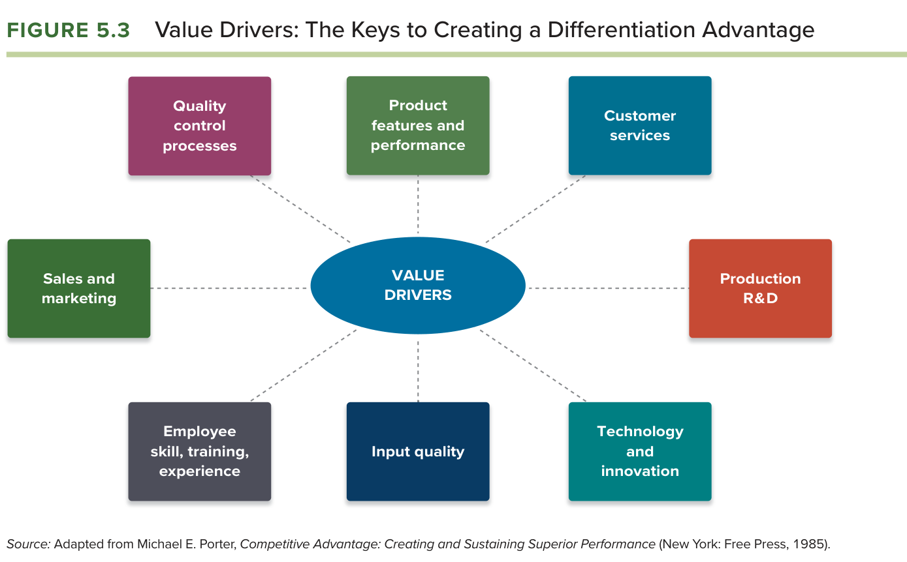
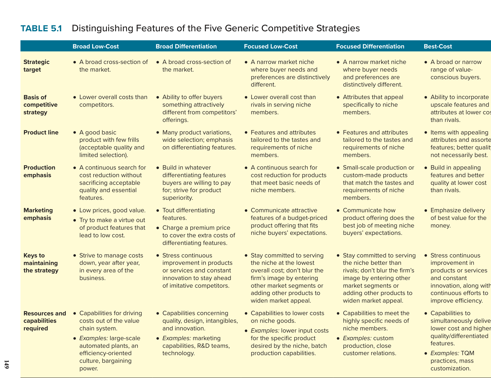
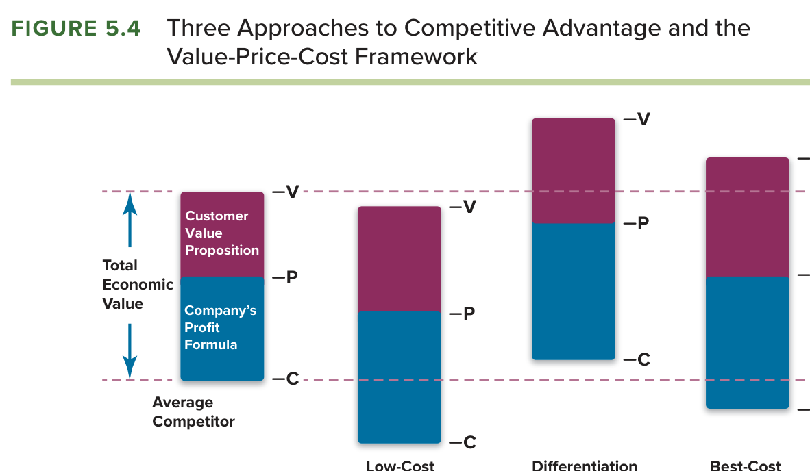

| Buku acuan | Thompson, Peteraf, Gamble & Strickland, Crafting & Executing Strategy: The Quest for Competitive Advantage (edisi ke-24, 2024), Bab 5 “The Five Generic Competitive Strategies”. |
| Framework sesi | Benchmarking sebagaimana ditetapkan silabus untuk sesi 6 bersama Bab 5; uraiannya bersumber dari Bab 4 buku (hlm. 109 sampai 111) dan Illustration Capsule 4.2 serta 4.3. |
| Kasus penerapan | Grant (2010), Case 9 “AirAsia: The World’s Lowest Cost Airline” dan Case 6 “Manchester United: Preparing for Life without Ferguson”. |
| Standar dosen | RPKPS “@2026 AOL Course Outline SM MM_JKT SEMBA”, termasuk rubrik nilai, panduan analisis kasus (Appendix 3), struktur term paper, learning diary, dan sesi framework. |
| Sesi terkait | Sesi 6: Ch. 05 + Benchmarking. Sesi 5: Ch. 04 (VRIN sebagai syarat berbasis sumber daya). Sesi 4: Ch. 03 (lima kekuatan sebagai kondisi pasar). Sesi 2: Ch. 01 (kerangka value-price-cost yang ditutup Figure 5.4). |
Modul ini ditulis sebagai uraian naratif, bukan ringkasan. Setiap sub-bagian framework mengikuti urutan yang sama: pengertian dan kedudukannya dalam buku, uraian setiap dimensi beserta mekanismenya, cara seorang CEO menggunakannya, penerapan pada kasus dengan angka, dan kesalahan yang menurunkan nilai. Bacalah gambar asli buku terlebih dahulu pada setiap sub-bagian, lalu paragraf-paragraf yang menjelaskannya, karena paragraf tersebut merujuk langsung pada unsur-unsur gambar.
Bab 5 dibahas pada sesi keenam dengan sub-tujuan agar mahasiswa mampu membedakan lima strategi kompetitif generik dan menjelaskan mengapa masing-masing bekerja lebih baik pada kondisi persaingan tertentu, dan pada sesi yang sama kelompok yang bertugas mempresentasikan framework tambahan berupa Benchmarking (Almahendra, 2026). Pemasangan ini bermakna karena Bab 5 adalah bab pertama yang beralih dari analisis ke pilihan, dan pilihan antara biaya rendah dan diferensiasi hanya dapat dipertanggungjawabkan apabila perusahaan mengetahui posisinya relatif terhadap pesaing pada biaya dan pada nilai. Benchmarking adalah alat yang memberi pengetahuan itu, sehingga dosen tampaknya ingin mahasiswa memilih strategi generik berdasarkan bukti perbandingan, bukan berdasarkan preferensi.
Bab 5 adalah bab yang paling langsung menopang bagian solusi strategis dalam term paper, karena silabus menuntut solusi yang holistik dan bertumpu pada framework (Almahendra, 2026). Setiap alternatif strategi dalam analisis kasus, menurut standar buku, harus dapat ditempatkan pada salah satu dari lima sel Figure 5.1, dan pemilihannya harus dibela dengan kondisi pasar yang membuat strategi itu bekerja paling baik dan dengan sumber daya yang mendasarinya. Untuk Bab 5, nilai A menuntut mahasiswa menunjukkan mengapa strategi yang tidak dipilih akan gagal pada kondisi pasar yang sama, karena buku merinci jebakan setiap strategi dengan sangat eksplisit dan dosen menilai kemampuan memakai jebakan itu sebagai argumen tandingan.
Prinsip pertama cara berpikir dosen, framework mendahului opini, paling tampak pada bab ini karena Bab 5 memberi kosakata yang tegas: pernyataan bahwa AirAsia murah tidak bernilai, sedangkan pernyataan bahwa AirAsia menjalankan strategi berbiaya rendah dengan target luas yang memanfaatkan tujuh dari sepuluh pemicu biaya adalah analisis. Prinsip ketiga, analisis harus berujung keputusan, tampak pada penegasan buku bahwa memilih strategi generik mungkin adalah komitmen strategis terpenting yang dibuat perusahaan karena ia menggerakkan seluruh tindakan strategis lainnya (Thompson et al., 2024, hlm. 148). Prinsip ketujuh, menjembatani framework, tampak pada penutup bab yang menyatakan bahwa strategi generik yang berhasil bersifat berbasis sumber daya, sehingga Bab 5 tidak dapat dijalankan tanpa hasil VRIN dari Bab 4.
Pemasangan dengan Benchmarking memberi petunjuk dengan tingkat keyakinan [Kemungkinan Besar]. Dosen tampaknya ingin menutup lubang yang paling sering muncul dalam presentasi mahasiswa, yaitu klaim keunggulan biaya atau diferensiasi tanpa angka pembanding. Benchmarking memaksa perbandingan aktivitas demi aktivitas dengan pesaing, dan hasilnya menentukan sel Figure 5.1 mana yang jujur bagi perusahaan. Perusahaan yang biayanya ternyata sama dengan pesaing tidak boleh memilih strategi berbiaya rendah, betapa pun ia menyukainya, dan perusahaan yang atributnya ternyata mudah ditiru tidak boleh memilih diferensiasi.
Benchmarking adalah proses membandingkan cara dan hasil perusahaan melakukan aktivitas rantai nilai dengan cara dan hasil perusahaan lain, di dalam maupun di luar industri, untuk menemukan praktik terbaik dan menirunya (Thompson et al., 2024, hlm. 109). Dimensi pertama adalah objek pembandingan, yaitu aktivitas tertentu seperti pembelian bahan, pengelolaan persediaan, perakitan, waktu ke pasar, dan pemenuhan pesanan, bukan perusahaan secara keseluruhan. Dimensi kedua adalah mitra pembandingan, yang dapat berupa pesaing langsung, perusahaan di industri lain yang kelas dunia pada aktivitas tersebut, atau unit internal perusahaan sendiri. Dimensi ketiga adalah ukuran, yaitu biaya per unit aktivitas, waktu, mutu, atau ukuran industri yang disepakati seperti biaya per kursi-kilometer pada maskapai dan biaya energi yang diratakan pada industri surya. Dimensi keempat adalah sumber data, yaitu laporan publik dan analis, kunjungan lapangan, serta lembaga pengumpul data yang menyamarkan nama perusahaan. Keluarannya adalah kesenjangan kinerja yang terukur dan praktik terbaik yang harus ditiru untuk menutupnya.
Benchmarking lahir dari Xerox pada akhir 1970-an ketika perusahaan itu menemukan bahwa pesaing Jepang menjual mesin fotokopi pada harga yang setara dengan biaya produksi Xerox, dan buku mencatat bahwa Xerox memperluas pembandingan ke perusahaan kelas dunia mana pun, termasuk L.L. Bean untuk pergudangan (Thompson et al., 2024, hlm. 109). Dua contoh buku yang paling mendidik adalah Toyota yang mendapat gagasan persediaan tepat waktu dari supermarket Amerika dan Southwest Airlines yang mempersingkat waktu putar pesawat dengan mempelajari kru pit balap mobil, karena keduanya menunjukkan bahwa praktik terbaik sering ditemukan di luar industri. Kode etik benchmarking dalam Illustration Capsule 4.3 melengkapi framework ini dengan batas legal: perusahaan tidak boleh membicarakan biaya dengan pesaing apabila biaya adalah unsur penetapan harga, sehingga data pesaing harus diperoleh melalui pihak ketiga atau sumber publik.
Hubungan benchmarking dengan Bab 5 terletak pada dua tempat. Pertama, pada strategi berbiaya rendah, benchmarking adalah cara mengetahui pemicu biaya mana yang sudah dimanfaatkan dan mana yang belum, karena kesenjangan biaya per aktivitas terhadap pesaing menunjukkan tempat pemicu itu belum bekerja. Kedua, pada strategi diferensiasi, benchmarking terhadap pemicu nilai menunjukkan atribut mana yang benar-benar lebih baik dari pesaing dan mana yang hanya dianggap lebih baik. Manfaatnya dalam bisnis internasional adalah memungkinkan perusahaan di pasar berkembang membandingkan diri dengan pemimpin global sebelum bersaing dengannya; AirAsia menjadikan Ryanair dan Southwest sebagai tolok ukur sejak awal, dan hasilnya adalah biaya per kursi-kilometer 11,66 sen yang sebanding dengan pemimpin dunia (Grant, 2010). Keterbatasannya adalah bahwa benchmarking hanya menemukan praktik yang sudah ada, sehingga ia dapat membuat perusahaan setara tetapi tidak dengan sendirinya membuatnya unggul; keunggulan menuntut praktik baru yang belum ada tolok ukurnya.
Bab 5 berjudul The Five Generic Competitive Strategies dan memuat empat tujuan pembelajaran: memahami apa yang membedakan lima strategi generik dan mengapa sebagian bekerja lebih baik pada kondisi tertentu, mengenali jalan utama mencapai keunggulan biaya rendah, mengidentifikasi jalan utama menuju keunggulan diferensiasi, dan menjelaskan atribut strategi biaya terbaik sebagai hibrida (Thompson et al., 2024, hlm. 125). Framework yang harus dikuasai ada sebelas: lima strategi generik (Figure 5.1), sepuluh pemicu biaya (Figure 5.2), perombakan sistem rantai nilai untuk menurunkan biaya (Capsule 5.1), kondisi dan jebakan strategi berbiaya rendah, delapan pemicu nilai (Figure 5.3), empat rute penyampaian nilai unggul termasuk pemberian sinyal nilai, kondisi dan jebakan diferensiasi, strategi terfokus beserta kondisi dan risikonya (Capsule 5.2 dan 5.3), strategi biaya terbaik beserta kondisi dan risikonya (Capsule 5.4), ciri pembeda lima strategi (Table 5.1) dan sifat berbasis sumber daya, serta tiga pendekatan keunggulan dalam kerangka value-price-cost (Figure 5.4).

Strategi kompetitif menyangkut rencana permainan manajemen untuk memperkuat posisi pasar dan mengamankan keunggulan atas pesaing, dan meskipun tidak ada dua perusahaan yang strateginya persis sama, dua faktor terbesar yang membedakan satu strategi dari yang lain adalah apakah target pasarnya luas atau sempit dan apakah keunggulan yang dikejar terkait biaya lebih rendah atau diferensiasi (Thompson et al., 2024, hlm. 127). Dua faktor itu menghasilkan empat pilihan ditambah satu hibrida pada Figure 5.1. Strategi berbiaya rendah dengan target luas berupaya mencapai biaya keseluruhan yang lebih rendah dari pesaing pada produk yang sebanding untuk spektrum pembeli yang luas, biasanya dengan harga di bawah pesaing. Strategi diferensiasi luas berupaya membedakan tawaran dengan atribut yang menarik bagi spektrum pembeli yang luas. Strategi berbiaya rendah terfokus memusatkan diri pada kebutuhan segmen sempit dan memenuhinya dengan biaya lebih rendah dari pesaing. Strategi diferensiasi terfokus memusatkan diri pada segmen sempit dengan atribut yang dikustomisasi. Strategi biaya terbaik, di tengah gambar, memberi pelanggan lebih banyak nilai untuk uang mereka dengan atribut kelas atas pada harga lebih rendah dari pesaing yang setara.
Buku menegaskan bahwa memilih salah satu dari lima strategi ini mungkin adalah komitmen strategis terpenting perusahaan, karena setiap strategi menetapkan tema sentral bagaimana perusahaan akan mengalahkan pesaing, menciptakan batas bagi manuver, dan menuntut perbedaan pada lini produk, penekanan produksi, penekanan pemasaran, dan cara mempertahankan strategi (Thompson et al., 2024, hlm. 148). Bagi CEO, mekanisme yang paling penting dari Figure 5.1 adalah bahwa sumbu vertikal dan horizontal bukan pilihan bebas melainkan konsekuensi: perusahaan yang memilih target luas harus memiliki skala, dan perusahaan yang memilih diferensiasi harus memiliki kapabilitas yang sulit ditiru, sehingga sel yang dipilih harus sesuai dengan hasil analisis Bab 3 tentang industri dan Bab 4 tentang aset.
Ada dua cara utama mencapai keunggulan biaya: melakukan aktivitas rantai nilai lebih hemat biaya daripada pesaing, dan merombak sistem rantai nilai untuk menghilangkan atau melewati aktivitas yang menimbulkan biaya (Thompson et al., 2024, hlm. 128). Untuk cara pertama, buku menegaskan bahwa tidak ada aktivitas yang luput dari pemeriksaan biaya dan bahwa perhatian khusus harus diberikan pada pemicu biaya, yaitu faktor yang berpengaruh kuat pada biaya dan dapat dipakai sebagai tuas.

Figure 5.2 memuat sepuluh pemicu biaya dan buku menguraikan pendekatan untuk masing-masing (Thompson et al., 2024, hlm. 129 sampai 131). Pertama, menangkap seluruh skala ekonomi yang tersedia, karena biaya per unit turun ketika skala operasi naik, termasuk pada iklan seperti Anheuser-Busch yang menyebar biaya iklan Super Bowl ke jutaan kasus bir. Kedua, memanfaatkan efek pengalaman dan kurva pembelajaran, karena biaya suatu aktivitas turun seiring pengalaman personel. Ketiga, mengoperasikan fasilitas pada kapasitas penuh, karena biaya tetap tersebar ke volume yang lebih besar, dan semakin padat modal bisnisnya semakin besar hukuman biaya bagi kapasitas yang menganggur. Keempat, meningkatkan efisiensi rantai pasok melalui kemitraan dengan pemasok dan persediaan tepat waktu. Kelima, mengganti input dengan yang lebih murah tanpa mengorbankan mutu. Keenam, memakai kekuatan tawar terhadap pemasok seperti Home Depot. Ketujuh, memakai sistem daring dan perangkat lunak untuk efisiensi operasi. Kedelapan, memperbaiki desain proses dan memakai teknologi produksi maju seperti pabrik otomatis Dell. Kesembilan, waspada terhadap keunggulan biaya dari alih daya atau integrasi vertikal. Kesepuluh, memotivasi karyawan melalui insentif dan budaya seperti Nucor dengan dua puluh ribu rekan setimnya.
Cara kedua, merombak sistem rantai nilai, dapat menghasilkan keunggulan biaya yang dramatis dengan tiga pendekatan: menjual langsung kepada konsumen dan melewati distributor, yang penting karena biaya grosir dan eceran sering mencapai 35 sampai 50 persen harga akhir; merampingkan operasi dengan menghilangkan langkah kerja bernilai rendah seperti Walmart yang memindahkan barang langsung dari truk pemasok ke truk toko; dan mengurangi biaya penanganan bahan dengan meminta pemasok berlokasi dekat fasilitas perusahaan (Thompson et al., 2024, hlm. 131). Buku memberi contoh Nucor yang mengganti tanur tinggi dengan tanur busur listrik dan Southwest Airlines yang menguasai waktu putar 25 menit dibandingkan 45 menit pesaing sehingga pesawatnya terbang lebih banyak jam per hari, tanpa kursi bernomor, transfer bagasi, atau kelas satu. Contoh Southwest itu adalah cetak biru AirAsia, dan pembahasannya di Bagian C akan menunjukkan pemicu mana yang dipakai AirAsia dan mana yang tidak.
Illustration Capsule 5.1 tentang Vanguard menunjukkan strategi berbiaya rendah pada industri jasa. Vanguard memimpin investasi indeks pasif dengan rasio biaya rata-rata 0,09 persen dibandingkan 0,54 persen industri, ditopang oleh struktur kepemilikan oleh nasabah yang menghapus pemegang saham eksternal, struktur organisasi yang datar, dan strategi pengikut cepat yang memungkinkannya mencapai skala lebih cepat; hasilnya adalah aset kelolaan lebih dari 7,7 triliun dolar dan tekanan pada pesaing yang disebut efek Vanguard (Thompson et al., 2024, hlm. 132). Buku juga menegaskan bahwa perusahaan berbiaya rendah adalah juara kehematan tetapi jarang ragu berinvestasi agresif pada aset yang menjanjikan penurunan biaya, seperti Walmart yang menjadi pengadopsi awal teknologi dan mempertahankan keunggulan biayanya lebih dari 45 tahun (Thompson et al., 2024, hlm. 133).
Strategi berbiaya rendah semakin kuat ketika lima kondisi terpenuhi: persaingan harga antar penjual berlangsung sengit, produk pesaing pada dasarnya identik dan tersedia luas, hanya sedikit cara berdiferensiasi yang bernilai bagi pembeli, biaya beralih pembeli rendah, dan pembeli peka harga atau memiliki kekuatan menawar harga (Thompson et al., 2024, hlm. 133 sampai 134). Mekanismenya adalah bahwa pada kondisi semacam itu harga menjadi satu-satunya medan persaingan, dan produsen berbiaya terendah berada pada posisi terbaik untuk memenangkan pembeli yang peka harga, menetapkan lantai harga pasar, dan tetap untung ketika perang harga terjadi. Kelima kondisi ini adalah daftar periksa yang harus dijalankan sebelum memilih sel berbiaya rendah pada Figure 5.1, dan industri maskapai jarak pendek memenuhi kelimanya hampir sempurna.
Buku merinci tiga jebakan dan satu risiko sisa. Jebakan pertama dan terbesar adalah terbawa oleh pemotongan harga yang terlalu agresif, karena penjualan yang lebih tinggi tidak otomatis menjadi laba yang lebih tinggi; contoh numerik buku menunjukkan bahwa perusahaan yang menjual 1.000 unit dengan harga 10 dolar, biaya 9 dolar, dan margin 1 dolar, apabila memotong harga 5 persen menjadi 9,50 dolar, membutuhkan kenaikan penjualan 100 persen hanya untuk kembali ke laba semula (Thompson et al., 2024, hlm. 134). Jebakan kedua adalah mengandalkan pendekatan penurunan biaya yang mudah ditiru pesaing sehingga keunggulannya berumur pendek. Jebakan ketiga adalah terlalu terpaku pada penurunan biaya sehingga tawaran menjadi terlalu miskin fitur, atau mengabaikan menurunnya kepekaan harga pembeli. Risiko sisanya adalah pesaing inovatif menemukan pendekatan rantai nilai yang lebih murah lagi, dan investasi besar pada cara operasi saat ini membuat perpindahan menjadi mahal. Bagi CEO, contoh numerik itu adalah argumen paling kuat untuk tidak memakai harga sebagai senjata pertama, karena keunggulan biaya paling bernilai justru ketika harga tidak diturunkan dan selisih biaya dinikmati sebagai margin.
Strategi diferensiasi menarik ketika kebutuhan dan preferensi pembeli terlalu beragam untuk dipuaskan oleh tawaran standar, dan intinya adalah menawarkan atribut unik yang oleh banyak pembeli dianggap menarik dan layak dibayar lebih (Thompson et al., 2024, hlm. 135). Diferensiasi yang berhasil memungkinkan perusahaan memperoleh harga premium, meningkatkan penjualan unit, dan memperoleh loyalitas merek, dan ia meningkatkan profitabilitas hanya apabila harga yang lebih tinggi atau penjualan yang lebih besar melebihi biaya tambahan untuk berdiferensiasi. Buku menegaskan bahwa diferensiasi bukan urusan departemen pemasaran semata dan tidak terbatas pada mutu dan layanan, melainkan dapat berada di sepanjang rantai nilai, dan pendekatan yang paling sistematis adalah memusatkan perhatian pada pemicu nilai, yaitu faktor yang sangat efektif menciptakan diferensiasi.

Figure 5.3 memuat delapan pemicu nilai dengan pendekatan masing-masing (Thompson et al., 2024, hlm. 135 sampai 137). Pertama, menciptakan fitur dan atribut kinerja produk yang menarik banyak pembeli, termasuk keselamatan, gaya, dan ukuran. Kedua, memperbaiki layanan pelanggan atau menambah layanan ekstra seperti pengiriman, pengembalian, dan perbaikan. Ketiga, berinvestasi pada riset produksi yang memungkinkan produksi pesanan khusus dan variasi produk. Keempat, mengejar inovasi dan kemajuan teknologi yang memberi keunggulan penggerak pertama. Kelima, mengejar perbaikan mutu berkelanjutan yang mengurangi cacat dan memungkinkan garansi lebih panjang. Keenam, meningkatkan pemasaran dan pembangunan merek, yang dapat menciptakan diferensiasi bahkan ketika perbedaan nyata kecil, seperti peminum Pepsi dan Coke yang tidak dapat membedakan keduanya dalam uji rasa buta. Ketujuh, mencari input bermutu tinggi seperti spesifikasi biji kopi Starbucks. Kedelapan, menekankan manajemen sumber daya manusia yang meningkatkan keterampilan dan pengetahuan personel. Seperti pada biaya, sistem rantai nilai juga dapat dirombak untuk diferensiasi melalui koordinasi dengan sekutu saluran hilir dan dengan pemasok, seperti Coca-Cola yang pernah mengambil alih pembotol yang bermasalah untuk memperbaikinya.
Buku memberi empat rute dasar untuk menawarkan sesuatu yang tidak dapat ditawarkan pesaing (Thompson et al., 2024, hlm. 138 sampai 139). Rute pertama, yang paling tidak jelas dan paling sering diabaikan, adalah memasukkan atribut yang menurunkan biaya keseluruhan pembeli dalam memakai produk, seperti komponen yang dipotong sesuai ukuran, pengiriman tepat waktu, peralatan hemat energi, dan interval perawatan yang lebih panjang. Rute kedua adalah memasukkan fitur berwujud yang meningkatkan kepuasan, seperti fungsi, desain, keandalan, dan kemudahan. Rute ketiga adalah memasukkan fitur tak berwujud yang meningkatkan kepuasan secara non-ekonomi, seperti status, citra, dan prestise pada Bentley, Louis Vuitton, dan Cartier, atau daya tarik lingkungan pada Tesla. Rute keempat adalah memberi sinyal nilai kepada pembeli, karena pada beberapa kasus pembeli sulit menilai pengalaman yang akan mereka peroleh; sinyal nilai mencakup harga tinggi yang menyiratkan mutu, kemasan yang lebih menarik, isi iklan yang menekankan atribut unggul, mutu brosur, dan kemewahan fasilitas penjual.
Pemberian sinyal nilai sangat penting pada empat keadaan: ketika diferensiasi bertumpu pada fitur tak berwujud yang subjektif, ketika pembeli membeli untuk pertama kali, ketika pembelian ulang jarang terjadi, dan ketika pembeli tidak canggih (Thompson et al., 2024, hlm. 139). Buku kemudian menegaskan syarat sumber daya: diferensiasi menuntut kapabilitas pada layanan pelanggan, pemasaran, manajemen merek, dan teknologi yang tidak hanya cocok dengan strategi tetapi juga lebih unggul dari pesaing, seperti Mayo Clinic dengan keahlian khusus yang tidak mampu ditiru kebanyakan rumah sakit. Pendekatan diferensiasi yang paling berhasil adalah yang sulit ditiru pesaing, karena pesaing yang cakap pada akhirnya dapat mengkloning hampir semua fitur produk; atribut tak berwujud yang kompleks secara sosial seperti reputasi dan hubungan jangka panjang jauh lebih sulit ditiru, dan diferensiasi yang menciptakan biaya beralih, seperti pada Microsoft Office, memberi rute ke keunggulan yang bertahan. Bagi CEO, rute pertama layak mendapat perhatian khusus karena ia adalah diferensiasi yang dapat diukur dalam angka oleh pembeli bisnis, sehingga paling mudah dibela di hadapan pembeli yang rasional.
Diferensiasi bekerja paling baik ketika empat kondisi terpenuhi: kebutuhan dan penggunaan pembeli beragam seperti pada restoran dan majalah, ada banyak cara berdiferensiasi yang bernilai bagi pembeli seperti pada hotel dan kosmetik, sedikit pesaing yang mengikuti pendekatan diferensiasi yang sama sehingga tidak terjadi kepadatan strategi, dan perubahan teknologi berlangsung cepat sehingga persaingan berputar pada fitur yang terus berkembang (Thompson et al., 2024, hlm. 139 sampai 140). Komoditas dasar seperti bahan kimia dan produk pertanian memberi sedikit peluang diferensiasi, dan kondisi ketiga mengingatkan bahwa diferensiator yang berjalan di jalannya sendiri menghadapi lebih sedikit persaingan langsung daripada yang mencoba mengungguli pesaing pada atribut yang sama.
Jebakan diferensiasi ada tiga besar dan tiga tambahan. Tiga jebakan besar adalah bertumpu pada atribut yang mudah dan cepat ditiru sehingga peniru cepat mengembalikan kesetaraan, pembeli melihat sedikit nilai pada atribut unik sehingga penjualan mengecewakan meskipun produk berbeda, dan pengeluaran berlebihan untuk berdiferensiasi sehingga profitabilitas terkikis, karena kunci diferensiasi yang menguntungkan adalah menjaga biaya per unit untuk berdiferensiasi di bawah premi harga yang dapat diperoleh (Thompson et al., 2024, hlm. 140). Tiga jebakan tambahan adalah menawarkan perbaikan yang sepele sehingga loyalitas lemah, berdiferensiasi berlebihan sehingga fitur melampaui kebutuhan kebanyakan pembeli, dan menetapkan premi harga yang terlalu tinggi sehingga dianggap memeras (Thompson et al., 2024, hlm. 141). Buku menutup dengan peringatan yang penting bagi kasus AirAsia: strategi berbiaya rendah dapat mengalahkan strategi diferensiasi ketika pembeli puas dengan produk dasar dan tidak menganggap atribut tambahan layak dibayar lebih.
Yang membedakan strategi terfokus dari strategi luas adalah perhatian terpusat pada bagian sempit dari total pasar, dan ceruk itu dapat berupa segmen geografis seperti Community Coffee di Louisiana, segmen pelanggan, atau segmen produk (Thompson et al., 2024, hlm. 141). Strategi berbiaya rendah terfokus mengamankan keunggulan dengan melayani pembeli ceruk pada biaya dan biasanya harga yang lebih rendah dari pesaing, dan jalannya sama dengan strategi berbiaya rendah luas, yaitu memakai pemicu biaya dan melewati aktivitas yang tidak esensial; satu-satunya perbedaan nyata adalah ukuran kelompok pembeli. Illustration Capsule 5.2 tentang Clinicas del Azucar di Meksiko menunjukkan strategi ini pada layanan diabetes: dengan algoritma diagnosis berbasis bukti, jangkauan seluler, dan alur pasien yang menghapus rujukan berganda, klinik itu menurunkan biaya perawatan lebih dari 70 persen dan waktu kunjungan lebih dari 80 persen bagi penduduk berpenghasilan rendah (Thompson et al., 2024, hlm. 142). Strategi diferensiasi terfokus menawarkan produk unggul yang disesuaikan dengan preferensi kelompok pembeli sempit, dan keberhasilannya bergantung pada adanya segmen yang mencari atribut khusus dan kemampuan perusahaan menonjol dari pesaing di ceruk yang sama; Illustration Capsule 5.3 tentang Canada Goose menunjukkan bagaimana keputusan memangkas produksi label pribadi dan tetap berproduksi di Kanada menghasilkan parka seharga hampir seribu dolar yang tidak pernah didiskon dan pendapatan yang tumbuh dari sekitar tiga juta menjadi lebih dari 830 juta dolar (Thompson et al., 2024, hlm. 143).
Strategi terfokus semakin menarik ketika lima kondisi terpenuhi: ceruk cukup besar untuk menguntungkan dan tumbuh, pemimpin industri memilih tidak bersaing di ceruk itu, mahal atau sulit bagi pesaing multi-segmen memenuhi kebutuhan khusus ceruk sekaligus pelanggan utamanya, industri memiliki banyak ceruk sehingga pemfokus dapat memilih yang paling sesuai kapabilitasnya, dan sedikit pesaing yang berspesialisasi pada segmen yang sama (Thompson et al., 2024, hlm. 143 sampai 144). Risikonya ada empat: pesaing di luar ceruk menemukan cara menandingi pemfokus, seperti Hilton dengan strategi multi-merek dari Waldorf Astoria sampai Hampton yang memungkinkannya memasuki setiap ceruk penginapan; preferensi anggota ceruk bergeser ke arah pasar utama sehingga hambatan masuk ke ceruk turun; segmen menjadi begitu menarik sehingga dibanjiri pesaing; dan pertumbuhan segmen melambat (Thompson et al., 2024, hlm. 145). Risiko pertama adalah yang paling relevan bagi maskapai berbiaya rendah, karena maskapai jaringan seperti Singapore Airlines dan Qantas menjawab AirAsia dan pesaingnya dengan merek berbiaya rendah sendiri seperti Scoot dan Jetstar.
Strategi biaya terbaik adalah hibrida biaya rendah dan diferensiasi yang memasukkan ciri keduanya sekaligus, dan untuk menjalankannya dengan menguntungkan perusahaan harus memiliki kapabilitas memasukkan atribut kelas atas pada biaya yang lebih rendah dari pesaing (Thompson et al., 2024, hlm. 145). Targetnya adalah pembeli yang sadar nilai, yang berbeda dari pembeli yang sadar harga: mereka menghindari produk murah kelas bawah sekaligus produk mahal kelas atas tetapi bersedia membayar harga yang wajar untuk fitur ekstra yang berguna, dan kelompok ini sering merupakan bagian yang sangat besar dari pasar. Buku membedakannya dengan tegas: ia berbeda dari strategi berbiaya rendah karena atribut tambahan menimbulkan biaya tambahan, dan berbeda dari diferensiasi karena menuntut kemampuan memproduksi fitur kelas atas lebih murah dari produsen kelas atas lainnya (Thompson et al., 2024, hlm. 146). Contoh klasiknya adalah Lexus, yang dirancang setara Mercedes dan BMW, dijual melalui jaringan dealer terpisah, tetapi diproduksi dengan pengetahuan Toyota membuat kendaraan bermutu tinggi berbiaya rendah sehingga dapat dihargai di bawah pesaing.
Strategi biaya terbaik bekerja paling baik di pasar tempat diferensiasi adalah norma dan sejumlah besar pembeli sadar nilai dapat dibujuk membeli produk kelas menengah, serta pada masa resesi ketika banyak pembeli menjadi lebih sadar nilai; tetapi tanpa sumber daya untuk memasukkan atribut kelas atas pada biaya lebih rendah, mengadopsinya tidak dianjurkan (Thompson et al., 2024, hlm. 146 sampai 147). Illustration Capsule 5.4 tentang Trader Joe's menunjukkan versi terfokusnya: dengan hanya 4.000 unit produk label pribadi dibandingkan lebih dari 50.000 di Kroger, toko yang lebih kecil, dan lokasi di lingkungan pembeli muda terdidik, Trader Joe's memperoleh penjualan lebih dari 2.000 dolar per kaki persegi, hampir dua kali Whole Foods, sekaligus menduduki peringkat teratas mutu dalam jajak pendapat (Thompson et al., 2024, hlm. 147). Risiko terbesarnya adalah terjepit antara produsen berbiaya rendah yang menyedot pelanggan dengan harga lebih rendah dan diferensiator kelas atas yang menyedot pelanggan dengan atribut lebih baik, sehingga perusahaan biaya terbaik harus mencapai biaya yang secara signifikan lebih rendah dalam menyediakan fitur kelas atas dan menawarkan atribut yang secara signifikan lebih baik dari pemimpin biaya rendah (Thompson et al., 2024, hlm. 148). Risiko terjepit inilah yang harus diperhitungkan setiap kali seseorang mengusulkan agar maskapai berbiaya rendah menambah kelas bisnis.

Table 5.1 membandingkan lima strategi pada tujuh dimensi: target strategis, dasar keunggulan kompetitif, lini produk, penekanan produksi, penekanan pemasaran, kunci mempertahankan strategi, dan sumber daya serta kapabilitas yang dibutuhkan (Thompson et al., 2024, hlm. 149). Strategi berbiaya rendah luas menargetkan irisan pasar yang luas dengan produk dasar yang baik, produksi yang terus mencari pengurangan biaya, pemasaran yang menonjolkan harga rendah, dan kunci berupa harga ekonomis serta biaya yang terus ditekan; sumber dayanya adalah kapabilitas menekan biaya di sepanjang rantai nilai. Diferensiasi luas menargetkan pasar luas dengan banyak variasi produk, produksi yang membangun fitur bernilai, pemasaran yang menonjolkan fitur berbeda dan harga premium, kunci berupa inovasi berkelanjutan dan pesan merek yang konsisten; sumber dayanya adalah kapabilitas pada mutu, desain, dan pemasaran. Dua strategi terfokus mengikuti pola yang sama pada ceruk sempit dengan kunci berupa komitmen total melayani ceruk lebih baik dari siapa pun. Strategi biaya terbaik menargetkan pembeli sadar nilai dengan produk yang atributnya baik sampai sangat baik pada harga di bawah pesaing setara, dengan kunci berupa keahlian unik memasukkan fitur kelas atas dengan biaya rendah.
Penutup bab menegaskan bahwa strategi generik yang berhasil bersifat berbasis sumber daya: agar berhasil, strategi harus cocok dengan situasi internal dan ditopang oleh sumber daya, pengetahuan, dan kapabilitas yang sesuai (Thompson et al., 2024, hlm. 148). Berbiaya rendah menuntut keahlian memakai pemicu biaya lebih efektif dari pesaing atau kapabilitas inovatif melewati aktivitas, diferensiasi menuntut kemampuan memakai pemicu nilai lebih efektif dari pesaing, terfokus menuntut kapabilitas memuaskan pembeli ceruk dengan luar biasa, dan biaya terbaik menuntut kemampuan memasukkan atribut kelas atas pada biaya lebih rendah. Untuk semua strategi, mempertahankan keunggulan bergantung pada sumber daya yang sulit ditiru pesaing dan tidak memiliki pengganti, yang berarti keempat tes VRIN dari Bab 4 adalah syarat masuk bagi setiap pilihan di Bab 5.

Figure 5.4 menutup bab dengan mengembalikan lima strategi ke kerangka Bab 1. Gambar itu membandingkan pesaing rata-rata dengan tiga strategi perwakilan pada tiga besaran, yaitu nilai yang dipersepsikan pelanggan, harga, dan biaya, dan menunjukkan total nilai ekonomi sebagai selisih nilai dan biaya, yang terbagi menjadi proposisi nilai pelanggan sebagai selisih nilai dan harga serta formula laba sebagai selisih harga dan biaya (Thompson et al., 2024, hlm. 150 sampai 151). Strategi berbiaya rendah mencapai biaya lebih rendah dari pesaing rata-rata dengan mengorbankan sebagian nilai yang dipersepsikan; apabila penurunan biaya lebih kecil dari penurunan nilai, total nilai ekonominya lebih besar, dan dengan harga yang lebih rendah ia menawarkan proposisi nilai yang lebih menarik sekaligus formula laba yang lebih baik. Strategi diferensiasi mungkin berbiaya lebih tinggi dari pesaing rata-rata, tetapi kenaikan nilai yang dipersepsikan lebih dari menutupnya, sehingga dengan harga yang jauh lebih tinggi ia tetap memberi proposisi nilai lebih besar dan laba lebih besar. Strategi biaya terbaik menempati jalan tengah dengan nilai dan biaya yang keduanya lebih baik dari pesaing rata-rata.
Buku mengakhiri dengan pengingat bahwa gambar itu adalah contoh strategi yang berhasil, dan keberhasilan bergantung jauh lebih banyak dari sekadar penempatan: ia bergantung pada konteks kompetitif, situasi internal, dan mutu eksekusi (Thompson et al., 2024, hlm. 151). Bagi CEO, Figure 5.4 adalah alat pemeriksa kejujuran yang paling ringkas. Strategi berbiaya rendah yang biayanya tidak benar-benar lebih rendah dari pesaing rata-rata hanya memotong harga dan margin; strategi diferensiasi yang nilainya tidak benar-benar lebih tinggi hanya menaikkan biaya; dan strategi biaya terbaik yang tidak lebih baik pada kedua besaran hanya terjepit. Ketiga kemungkinan gagal itu semuanya dapat diuji dengan benchmarking, dan inilah alasan silabus memasangkan keduanya.
Bagian ini menempatkan dua perusahaan dari folder kasus silabus pada Figure 5.1 dan menguji penempatan itu dengan seluruh alat bab. AirAsia dipakai sebagai contoh strategi berbiaya rendah luas karena kasus Grant (2010) memberi data biaya yang memungkinkan benchmarking terhadap Malaysia Airlines, dan Manchester United dipakai sebagai contoh diferensiasi luas karena kasus yang sama memberi data pendapatan dan margin yang memungkinkan benchmarking terhadap klub-klub Eropa. Bagian terakhir menguji godaan yang paling sering muncul dalam diskusi kelas, yaitu apakah maskapai berbiaya rendah sebaiknya bergeser ke strategi biaya terbaik.
AirAsia menempati sel berbiaya rendah dengan target luas, karena ia melayani spektrum pembeli yang luas, dari pekerja migran sampai wisatawan dan pebisnis kecil, dengan biaya per kursi-kilometer 11,66 sen dibandingkan 22,80 sen pada Malaysia Airlines (Grant, 2010). Dipetakan pada Figure 5.2, AirAsia memanfaatkan sekurang-kurangnya tujuh dari sepuluh pemicu biaya. Skala ekonomi tampak pada armada tunggal Airbus A320 yang menyebar biaya pelatihan, suku cadang, dan perawatan ke 78 pesawat. Kurva pembelajaran tampak pada penurunan biaya sejak 2001 seiring pengalaman awak dan staf darat. Utilisasi kapasitas tampak pada 11,8 jam terbang per hari dan tingkat keterisian 75 persen dibandingkan 67,8 persen. Efisiensi rantai pasok tampak pada waktu putar 25 menit yang meniru Southwest. Kekuatan tawar tampak pada pemesanan pesawat dalam jumlah besar yang memberi diskon dari Airbus. Sistem daring tampak pada penjualan tiket langsung melalui internet yang memangkas komisi agen. Insentif dan budaya tampak pada 3.799 karyawan untuk 78 pesawat dengan biaya staf RM 236,8 juta dibandingkan 19.094 karyawan dan RM 2.179,9 juta pada Malaysia Airlines.
Tiga pemicu yang tidak sepenuhnya dimanfaatkan sama pentingnya untuk disebut. Substitusi input berbiaya rendah terbatas karena bahan bakar, yang mencapai RM 1.389,8 juta atau lebih dari separuh pendapatan, tidak memiliki pengganti. Teknologi produksi dan desain proses terbatas oleh sifat jasa penerbangan. Alih daya atau integrasi vertikal belum menjadi sumber keunggulan yang terlihat dalam kasus. Pembacaan ini penting bagi CEO karena menunjukkan bahwa ruang penurunan biaya lebih lanjut di dalam perusahaan mulai sempit, sehingga tahap berikutnya harus datang dari perombakan sistem rantai nilai sebagaimana dijelaskan buku: AirAsia sudah menjual langsung dan melewati distributor, sudah menghapus langkah bernilai rendah seperti makanan gratis dan kursi bernomor, dan langkah berikutnya yang tersedia adalah pada sisi bandara dan pemasok, misalnya terminal berbiaya rendah dan kontrak perawatan jangka panjang.
Menjalankan framework pendamping pada kasus menghasilkan tabel berikut, dengan biaya dan pendapatan per kursi-kilometer dalam sen ringgit dan data keuangan dalam juta ringgit untuk 2008 (Grant, 2010).
| Ukuran aktivitas | AirAsia | Malaysia Airlines | Kesenjangan | Pemicu biaya yang bekerja |
|---|---|---|---|---|
| Biaya per kursi-kilometer | 11,66 | 22,80 | AirAsia 49 persen lebih rendah | Gabungan seluruh pemicu |
| Pendapatan per kursi-kilometer | 14,11 | 20,60 | AirAsia 31 persen lebih rendah | Harga rendah sebagai konsekuensi biaya |
| Tingkat keterisian (persen) | 75,0 | 67,8 | 7,2 poin | Utilisasi kapasitas |
| Utilisasi pesawat (jam per hari) | 11,8 | 11,1 | 0,7 jam | Utilisasi kapasitas, waktu putar |
| Karyawan per pesawat | 48,7 | 175,2 | AirAsia 72 persen lebih rendah | Insentif dan budaya, alih daya |
| Biaya staf terhadap pendapatan (persen) | 9,0 | 14,5 | 5,5 poin | Insentif dan budaya |
| Biaya bahan bakar terhadap pendapatan (persen) | 52,7 | 43,4 | AirAsia 9,3 poin lebih tinggi | Tidak ada; bahan bakar tidak tergantikan |
Tabel ini memberi tiga temuan yang tidak terlihat tanpa benchmarking. Pertama, keunggulan biaya AirAsia bersifat sistemik karena hampir setiap baris menunjukkan kesenjangan, bukan hanya satu baris. Kedua, satu-satunya baris yang merugikan AirAsia adalah bahan bakar sebagai persentase pendapatan, yang lebih tinggi justru karena pendapatannya per kursi lebih rendah, sehingga kepekaan AirAsia terhadap harga minyak lebih besar daripada Malaysia Airlines dan keputusan lindung nilai menjadi lebih menentukan, bukan kurang. Ketiga, kesenjangan pendapatan per kursi-kilometer yang lebih kecil daripada kesenjangan biaya, yaitu 31 persen melawan 49 persen, adalah bukti bahwa AirAsia tidak terjebak pada jebakan pertama buku tentang pemotongan harga yang berlebihan, karena selisih harga dan biaya per kursi-kilometer tetap positif sebesar 2,45 sen. Perlu dicatat dengan tingkat keyakinan [Kemungkinan Besar] bahwa pendapatan per kursi-kilometer Malaysia Airlines yang berada di bawah biayanya menunjukkan laba operasinya pada 2008 ditopang pendapatan non-penumpang seperti kargo, dan pembacaan ini sendiri adalah temuan benchmarking yang layak dibawa ke kelas.
Kelima kondisi buku terpenuhi pada arena jarak pendek Asia Tenggara. Persaingan harga sengit karena Tiger, Jetstar, Cebu Pacific, dan Lion Air masuk ke rute yang sama. Produk pada dasarnya identik, karena kursi ekonomi dua jam penerbangan sulit dibedakan. Sedikit cara berdiferensiasi yang bernilai, karena penumpang jarak pendek tidak bersedia membayar makanan atau ruang kaki. Biaya beralih rendah, karena tiket dibeli per perjalanan. Pembeli peka harga, karena sebagian besar adalah penumpang yang semula naik bus. Pada arena jarak jauh yang dilayani AirAsia X, kondisi kedua dan ketiga melemah, karena pada penerbangan tiga belas jam kenyamanan kursi dan hiburan menjadi atribut yang bernilai, dan inilah alasan struktural mengapa strategi berbiaya rendah lebih sulit dipertahankan di rute London.
Dari tiga jebakan buku, AirAsia lolos dari jebakan pertama sebagaimana ditunjukkan benchmarking, tetapi rentan pada jebakan kedua dan ketiga. Jebakan kedua, mengandalkan pendekatan yang mudah ditiru, nyata karena armada tunggal, penjualan daring, dan waktu putar cepat adalah praktik terbaik industri yang sudah ditiru Tiger dan Jetstar, sehingga sumber keunggulan yang bertahan harus dicari pada aset yang lolos VRIN seperti skala jaringan dan merek regional, bukan pada praktik operasi. Jebakan ketiga, terpaku pada biaya sehingga mengabaikan pergeseran preferensi, adalah risiko jangka panjang ketika kelas menengah Asia Tenggara tumbuh dan sebagian penumpang mulai menginginkan atribut tambahan. Risiko sisa yang disebut buku, yaitu investasi besar pada cara operasi saat ini yang membuat perubahan mahal, tampak pada pesanan pesawat dalam jumlah besar yang mengunci AirAsia pada model saat ini selama satu dekade.
Manchester United menempati sel diferensiasi luas, karena ia melayani basis penggemar global yang sangat luas, 80 juta orang di Asia saja, dengan atribut yang membuat penggemar, sponsor, dan penyiar bersedia membayar lebih daripada untuk klub lain (Grant, 2010). Dipetakan pada Figure 5.3, pemicu nilai yang bekerja adalah fitur dan kinerja produk berupa permainan menyerang yang konsisten menang, dengan poin kinerja tertinggi di Eropa 2000 sampai 2009; mutu input berupa pemain yang direkrut oleh jaringan pencari bakat lebih dari dua puluh orang; manajemen sumber daya manusia berupa akademi dan disiplin latihan Ferguson; pemasaran dan pembangunan merek berupa sub-merek untuk anak, remaja, dan dewasa serta anak perusahaan internasional; dan layanan pelanggan berupa museum, tur stadion, sekolah sepak bola, MUTV, dan kartu kredit. Bukti bahwa diferensiasi ini berhasil sesuai tiga hasil yang disebut buku adalah harga premium pada kontrak sponsor AON 80 juta poundsterling untuk empat tahun, penjualan unit berupa pendapatan yang tumbuh dari 116 juta menjadi 257 juta poundsterling dalam delapan tahun, dan loyalitas merek berupa 1,2 juta pemegang kartu kredit klub di Korea Selatan.
Dari empat rute penyampaian nilai unggul, Manchester United paling kuat pada rute ketiga, yaitu fitur tak berwujud berupa prestise, sejarah, dan identitas, dan pada rute keempat, yaitu pemberian sinyal nilai melalui julukan Theatre of Dreams untuk Old Trafford, tur pramusim ke Asia, dan pemain bintang seperti Ronaldo yang berfungsi sebagai sinyal mutu bagi penggemar baru yang belum pernah menonton langsung. Buku menyatakan sinyal nilai sangat penting ketika diferensiasi bersifat tak berwujud dan pembeli membeli untuk pertama kali (Thompson et al., 2024, hlm. 139), dan kedua kondisi itu tepat menggambarkan pasar Asia yang sedang digarap klub. Kondisi diferensiasi buku juga terpenuhi: kebutuhan penggemar beragam, ada banyak cara berdiferensiasi mulai dari gaya bermain sampai sejarah, dan hanya Real Madrid yang mengikuti pendekatan diferensiasi global yang sama.
Jebakan diferensiasi yang paling relevan adalah jebakan ketiga, yaitu pengeluaran berlebihan untuk berdiferensiasi sehingga profitabilitas terkikis, dan benchmarking membuktikannya. Chelsea dan Real Madrid berdiferensiasi dengan membeli pemain terbaik dunia, dan hasilnya adalah pengembalian atas penjualan minus 60,4 persen dan 0,4 persen, sedangkan Manchester United yang membangun atribut yang sama melalui akademi memperoleh 12,6 persen (Grant, 2010). Buku menyatakan bahwa kunci diferensiasi yang menguntungkan adalah menjaga biaya per unit untuk berdiferensiasi di bawah premi yang dapat diperoleh (Thompson et al., 2024, hlm. 140), dan Manchester United adalah satu-satunya klub besar yang memenuhi syarat itu. Ini juga menunjukkan bahwa penempatan klub sebenarnya bergerak ke arah biaya terbaik dalam pengertian buku, yaitu atribut kelas atas pada biaya yang lebih rendah dari pesaing setara, dan pergerakan itulah yang membuatnya lolos dari risiko terjepit.
Pertanyaan yang paling sering muncul dalam diskusi kasus AirAsia adalah apakah maskapai itu sebaiknya membidik segmen menengah ke atas dengan kelas bisnis, dan Bab 5 memberi alat untuk menjawabnya dengan disiplin. Strategi biaya terbaik menuntut kapabilitas memasukkan atribut kelas atas pada biaya lebih rendah dari pesaing setara, dan pesaing setara pada kelas bisnis adalah Malaysia Airlines dan Singapore Airlines yang kapabilitas layanannya dibangun puluhan tahun. AirAsia tidak memiliki kapabilitas itu, dan buku menyatakan bahwa tanpa kapabilitas tersebut mengadopsi strategi biaya terbaik tidak dianjurkan (Thompson et al., 2024, hlm. 147). Risiko terjepit juga nyata: kelas bisnis AirAsia akan kalah atribut dari Singapore Airlines dan kalah harga dari kursi ekonomi AirAsia sendiri, sehingga ia hanya menarik segmen tipis di antara keduanya.
Namun analisis yang jujur harus membedakan dua arena. Pada jarak pendek, kelima kondisi strategi berbiaya rendah terpenuhi dan buku memperingatkan bahwa strategi berbiaya rendah dapat mengalahkan diferensiasi ketika pembeli puas dengan produk dasar (Thompson et al., 2024, hlm. 141), sehingga kelas bisnis akan menjadi jebakan berdiferensiasi berlebihan. Pada jarak jauh, kondisi kedua dan ketiga melemah, sehingga kursi premium yang sederhana pada AirAsia X dapat dibaca bukan sebagai pergeseran ke biaya terbaik melainkan sebagai atribut dasar yang dibutuhkan agar produk tidak terlalu miskin fitur, sesuai jebakan ketiga strategi berbiaya rendah. Pembedaan ini menunjukkan cara berpikir yang diharapkan dosen: jawaban yang benar bukan ya atau tidak, melainkan ya pada arena yang kondisinya mendukung dan tidak pada arena yang kondisinya menolak, dengan setiap jawaban dibela oleh kondisi eksplisit dari buku.
Figure 5.4 memungkinkan pemeriksaan kejujuran terakhir dengan angka. Untuk AirAsia dibandingkan Malaysia Airlines sebagai pesaing rata-rata, biaya per kursi-kilometer 11,66 sen jauh di bawah 22,80 sen, harga per kursi-kilometer 14,11 sen di bawah 20,60 sen, dan nilai yang dipersepsikan lebih rendah karena tanpa layanan tambahan. Selisih harga dan biaya AirAsia 2,45 sen positif, sedangkan selisih pada Malaysia Airlines untuk pendapatan penumpang negatif 2,20 sen, sehingga formula laba AirAsia jelas lebih baik, dan selama penurunan nilai yang dipersepsikan lebih kecil dari penurunan biaya 11,14 sen, total nilai ekonomi AirAsia lebih besar. Ini persis gambaran strategi berbiaya rendah yang berhasil pada Figure 5.4. Untuk Manchester United dibandingkan Real Madrid, nilai yang dipersepsikan setara atau lebih tinggi, harga yang diwujudkan dalam sponsor dan hak siar setara, tetapi biaya lebih rendah karena upah sekitar 50 persen pendapatan, sehingga total nilai ekonomi lebih besar; ini adalah gambaran strategi biaya terbaik pada Figure 5.4, dan margin 31,4 persen melawan 14,1 persen adalah buktinya.
Bagian ini menerapkan empat komponen analisis kasus silabus (Almahendra, 2026) pada pertanyaan yang lahir dari Bab 5: strategi generik mana yang harus dijalankan AirAsia pada arena jarak pendek dan arena jarak jauh, dan apakah keduanya boleh berbeda.
Tujuan AirAsia ada tiga: mempertahankan keunggulan biaya per kursi-kilometer yang sistemik, tumbuh ke arena jarak jauh tanpa merusak keunggulan itu, dan mengantisipasi pergeseran preferensi kelas menengah yang tumbuh. Penghalangnya juga tiga: praktik operasi berbiaya rendah sudah ditiru pesaing sehingga jebakan kedua buku mengancam, kondisi pasar jarak jauh tidak sepenuhnya memenuhi lima syarat strategi berbiaya rendah, dan AirAsia tidak memiliki kapabilitas layanan kelas atas yang disyaratkan strategi biaya terbaik (Grant, 2010; Thompson et al., 2024). Masalahnya adalah memilih sel Figure 5.1 untuk setiap arena berdasarkan kondisi dan sumber daya, bukan berdasarkan keinginan tumbuh.
Alternatif pertama adalah Satu Strategi untuk Semua Arena, yaitu berbiaya rendah luas murni pada jarak pendek dan jarak jauh tanpa atribut tambahan apa pun. Alternatif kedua adalah Dua Strategi untuk Dua Arena, yaitu berbiaya rendah luas murni pada jarak pendek dan berbiaya rendah dengan atribut dasar yang cukup pada jarak jauh, termasuk kursi premium sederhana pada AirAsia X sebagai unit terpisah. Alternatif ketiga adalah Bergeser ke Biaya Terbaik, yaitu menambah kelas bisnis dan layanan pada seluruh jaringan untuk membidik pembeli sadar nilai.
Isu pertama menanyakan apakah lima kondisi strategi berbiaya rendah terpenuhi pada kedua arena. Bagian C.3 menjawab terpenuhi pada jarak pendek dan sebagian pada jarak jauh, sehingga alternatif pertama mengabaikan perbedaan yang nyata. Isu kedua menanyakan apakah AirAsia memiliki kapabilitas yang disyaratkan biaya terbaik. Bagian C.5 menjawab tidak, dan risiko terjepit terhadap Singapore Airlines dan terhadap kursi ekonomi sendiri nyata, sehingga alternatif ketiga gugur. Isu ketiga menanyakan bagaimana melindungi keunggulan dari peniruan. Buku menjawab bahwa keunggulan yang bertahan bergantung pada sumber daya yang sulit ditiru, dan benchmarking menunjukkan keunggulan AirAsia bersifat sistemik, sehingga perlindungan terbaik adalah memperdalam sistem itu pada arena yang kondisinya mendukung, bukan mengencerkannya dengan atribut baru.
Secara deduktif, alternatif kedua terpilih. Premis pertama, strategi generik harus cocok dengan kondisi pasar, dan kondisi dua arena berbeda, sehingga satu strategi untuk semua gugur. Premis kedua, strategi generik harus berbasis sumber daya, dan AirAsia tidak memiliki sumber daya biaya terbaik, sehingga pergeseran itu gugur. Premis ketiga, atribut dasar pada jarak jauh bukan diferensiasi melainkan syarat agar produk tidak terlalu miskin fitur, sehingga ia tetap berada di sel berbiaya rendah. Secara kuantitatif, dengan selisih harga dan biaya 2,45 sen per kursi-kilometer pada 18.720 juta kursi-kilometer, arena jarak pendek menghasilkan sekitar RM 459 juta laba operasi per tahun yang harus dilindungi, sedangkan pada rute London selisih tarif 36,5 persen di bawah pesaing terendah harus dijaga agar tidak menyempit di bawah 20 persen, karena pada selisih yang lebih kecil penumpang jarak jauh yang menghargai kenyamanan akan kembali ke maskapai jaringan.
| Tindakan | Indikator kinerja | Jadwal | Penanggung jawab | Risiko utama |
|---|---|---|---|---|
| Benchmarking tahunan sepuluh pemicu biaya terhadap Ryanair, Southwest, dan Jetstar | Biaya per kursi-kilometer di bawah 12 sen; kesenjangan terhadap pemimpin dunia di bawah 10 persen per aktivitas | Setiap kuartal pertama, mulai 2009 | Direktur Operasi dan Keuangan | Data pesaing tidak tersedia; melanggar kode etik benchmarking |
| Perombakan sistem rantai nilai tahap berikut: terminal berbiaya rendah dan kontrak perawatan jangka panjang | Biaya bandara dan perawatan per kursi-kilometer turun 10 persen | 2009 sampai 2011 | Direktur Operasi | Otoritas bandara menolak; pesaing memperoleh syarat yang sama |
| Atribut dasar jarak jauh pada AirAsia X sebagai unit terpisah | Selisih tarif terhadap pesaing terendah tetap di atas 20 persen; keterisian di atas 75 persen; rugi unit di bawah RM 100 juta | Musim 2009 sampai 2010, dievaluasi tiap semester | CEO AirAsia X | Atribut merambat ke jarak pendek dan mengencerkan sistem biaya |
| Larangan kelas bisnis pada jarak pendek | Tidak ada produk kelas bisnis pada rute di bawah empat jam | Kebijakan tetap, ditinjau tiap tiga tahun | Dewan | Tekanan pasar ketika kelas menengah bergeser |
Evaluasi dampak dilakukan dengan Figure 5.4 setiap tahun: apabila selisih biaya terhadap pesaing rata-rata tetap lebih besar dari selisih nilai yang dipersepsikan, strategi berbiaya rendah masih menghasilkan total nilai ekonomi yang lebih besar dan dipertahankan; apabila selisih itu menyempit dua tahun berturut-turut pada satu arena, kondisi pasar arena itu harus diperiksa ulang terhadap lima syarat buku sebelum strategi generiknya diubah.
Empat pelajaran dapat ditarik. Pertama, strategi generik dipilih berdasarkan kondisi pasar dan sumber daya, bukan berdasarkan ambisi, dan dua arena dengan kondisi berbeda boleh memiliki strategi berbeda asalkan dipisahkan secara organisasi. Kedua, benchmarking adalah satu-satunya cara membuktikan bahwa keunggulan biaya nyata dan sistemik, dan ia sekaligus menunjukkan titik lemah yang tidak terlihat dari dalam. Ketiga, strategi biaya terbaik bukan jalan tengah yang aman melainkan strategi yang paling menuntut kapabilitas, dan risikonya adalah terjepit. Keempat, diferensiasi yang menguntungkan menuntut biaya berdiferensiasi yang lebih rendah dari premi yang diperoleh, dan Manchester United membuktikan bahwa akademi lebih murah daripada pasar transfer. Apabila seluruh bab diringkas dalam satu kalimat, kalimat itu adalah bahwa memilih strategi generik berarti memilih medan yang cocok dengan senjata yang dimiliki, dan benchmarking adalah cara mengetahui senjata mana yang sungguh dimiliki.
Daftar periksa berikut disusun dari rubrik silabus (Almahendra, 2026) dan batasan eksplisit Bab 5. Pertama, apakah perusahaan ditempatkan pada satu sel Figure 5.1 dengan alasan pada kedua sumbu, target dan jenis keunggulan. Kedua, apakah pemicu biaya atau pemicu nilai dipetakan satu per satu dengan bukti, termasuk pemicu yang tidak dimanfaatkan. Ketiga, apakah kondisi pasar yang membuat strategi itu bekerja diperiksa satu per satu, bukan diasumsikan. Keempat, apakah jebakan strategi yang dipilih dibahas sebagai risiko nyata perusahaan, bukan dikutip sebagai daftar. Kelima, apakah benchmarking memakai angka pesaing pada tingkat aktivitas dan menyimpulkan kesenjangan yang terukur.
Keenam, apakah strategi yang tidak dipilih ditolak dengan kondisi atau sumber daya yang eksplisit, terutama godaan biaya terbaik. Ketujuh, apakah syarat berbasis sumber daya dihubungkan dengan hasil VRIN dari Bab 4. Kedelapan, apakah Figure 5.4 dipakai untuk memeriksa apakah total nilai ekonomi benar-benar lebih besar dari pesaing rata-rata. Kesembilan, apakah rencana implementasi memuat indikator biaya atau nilai yang dapat diukur ulang setiap tahun. Kesepuluh, apakah terdapat argumen tandingan yang jujur, misalnya bahwa praktik berbiaya rendah sudah ditiru pesaing. Analisis yang memenuhi kesepuluh butir ini memenuhi rubrik nilai A, sedangkan analisis yang menyebut perusahaan berbiaya rendah tanpa angka pembanding biasanya berhenti pada nilai B karena tidak membuktikan apa pun.
Tiga kalimat berikut merangkum inti Bab 5 dalam bahasa yang selaras dengan cara berpikir dosen. Kalimat pertama, memilih strategi generik adalah komitmen terpenting perusahaan karena ia menggerakkan semua keputusan lain. Kalimat kedua, setiap strategi bekerja hanya pada kondisi tertentu dan hanya dengan sumber daya tertentu, sehingga pilihan harus dibela pada kedua sisi. Kalimat ketiga, keunggulan biaya dan diferensiasi sama-sama harus dibuktikan dengan angka pembanding, dan tanpa benchmarking keduanya hanya klaim.
Pertama, tempatkan Malaysia Airlines, Singapore Airlines, Jetstar, dan AirAsia X pada Figure 5.1 dan bela setiap penempatan pada kedua sumbu. Kedua, dari sepuluh pemicu biaya, pilih tiga yang menurut Anda paling berpengaruh pada selisih biaya per kursi-kilometer 11,14 sen dan perkirakan kontribusi masing-masing. Ketiga, hitung dengan contoh numerik buku berapa kenaikan penumpang yang dibutuhkan AirAsia agar pemotongan tarif 10 persen tidak menurunkan laba, dengan margin 2,45 sen per kursi-kilometer. Keempat, petakan delapan pemicu nilai pada Real Madrid dan tunjukkan pemicu mana yang menjelaskan pendapatannya yang lebih tinggi dari Manchester United. Kelima, tentukan rute penyampaian nilai unggul mana yang dipakai Manchester United di Asia dan sinyal nilai apa yang paling efektif.
Keenam, uji lima kondisi strategi terfokus pada AirAsia X sebagai pemfokus rute jarak jauh berbiaya rendah dan sebutkan risiko mana yang paling mengancam. Ketujuh, rumuskan syarat kapabilitas yang harus dimiliki AirAsia sebelum kelas bisnis layak dipertimbangkan, dan perkirakan berapa lama membangunnya. Kedelapan, bandingkan Trader Joe's pada Capsule 5.4 dengan Manchester United dan tunjukkan mengapa keduanya dapat disebut biaya terbaik. Kesembilan, gambar Figure 5.4 untuk Chelsea dibandingkan Manchester United dengan data kasus dan jelaskan mengapa total nilai ekonominya lebih kecil. Kesepuluh, susun rencana benchmarking tiga aktivitas untuk perusahaan tempat Anda bekerja, lengkap dengan mitra pembanding, ukuran, dan sumber data yang sesuai kode etik.
Paragraf pertama memuat satu wawasan yang mengubah cara pandang, misalnya bahwa jalan tengah antara murah dan bagus, yang selama ini terasa paling aman, ternyata adalah strategi yang paling menuntut kapabilitas dan paling mudah terjepit. Paragraf kedua memuat interpretasi pribadi, misalnya pada sel Figure 5.1 mana organisasi tempat Anda bekerja sebenarnya berada dibandingkan sel yang diklaimnya, dan apakah ada angka pembanding yang membuktikan klaim itu. Paragraf ketiga memuat pertanyaan yang tersisa, misalnya bagaimana perusahaan berbiaya rendah dapat mempertahankan keunggulannya ketika semua praktik terbaiknya sudah menjadi standar industri, dan pertanyaan inilah yang layak dibawa ke sesi tentang strategi bersaing lanjutan.
Slide pertama memuat definisi benchmarking dan praktik terbaik menurut buku beserta empat dimensinya, yaitu objek, mitra, ukuran, dan sumber data. Slide kedua memuat sejarah Xerox dan tiga contoh lintas industri buku, yaitu Toyota, Southwest, dan SunPower, untuk menunjukkan bahwa praktik terbaik sering ditemukan di luar industri. Slide ketiga menghubungkan benchmarking dengan Bab 4 sebagai penyedia bukti bagi VRIN dan dengan Bab 5 sebagai penguji sel Figure 5.1. Slide keempat menerapkan benchmarking pada AirAsia terhadap Malaysia Airlines dengan tabel Bagian C.2. Slide kelima memuat manfaat internasional berupa perbandingan dengan pemimpin global sebelum bersaing dengannya, kode etik Capsule 4.3, dan satu keterbatasan, yaitu bahwa benchmarking hanya membuat perusahaan setara dengan praktik yang sudah ada dan tidak dengan sendirinya menciptakan keunggulan baru.
| Pemicu biaya (Figure 5.2) | Wujud pada AirAsia menurut kasus | Tingkat pemanfaatan |
|---|---|---|
| Skala ekonomi | Armada tunggal A320; pesanan pesawat dalam jumlah besar | Tinggi |
| Pembelajaran dan pengalaman | Penurunan biaya sejak 2001 seiring pengalaman operasi | Tinggi |
| Utilisasi kapasitas | 11,8 jam per hari; keterisian 75 persen | Tinggi |
| Efisiensi rantai pasok | Waktu putar 25 menit; bandara sekunder | Tinggi |
| Biaya input | Bahan bakar tidak tergantikan; 52,7 persen pendapatan | Rendah |
| Kekuatan tawar | Diskon pembelian pesawat dari Airbus | Sedang |
| Sistem komunikasi dan teknologi informasi | Penjualan tiket langsung melalui internet | Tinggi |
| Teknologi produksi dan desain | Terbatas oleh sifat jasa penerbangan | Rendah |
| Alih daya atau integrasi vertikal | Belum tampak sebagai sumber keunggulan | Rendah |
| Insentif dan budaya | 3.799 karyawan; biaya staf 9 persen pendapatan; budaya informal | Tinggi |
| Istilah | Pengertian ringkas dalam bahasa sederhana |
|---|---|
| Competitive strategy | Rencana permainan manajemen untuk memperkuat posisi pasar dan mengamankan keunggulan atas pesaing. |
| Broad low-cost strategy | Mencapai biaya keseluruhan lebih rendah dari pesaing pada produk sebanding untuk pembeli yang luas. |
| Broad differentiation strategy | Menawarkan atribut unik yang dianggap menarik dan layak dibayar lebih oleh pembeli yang luas. |
| Focused low-cost strategy | Melayani ceruk sempit dengan biaya dan harga lebih rendah dari pesaing di ceruk itu. |
| Focused differentiation strategy | Melayani ceruk sempit dengan atribut yang disesuaikan lebih baik dari pesaing. |
| Best-cost strategy | Hibrida yang memberi atribut kelas atas pada harga lebih rendah dari pesaing setara. |
| Cost driver | Faktor yang berpengaruh kuat pada biaya dan dapat dipakai sebagai tuas menurunkannya. |
| Value driver | Faktor yang sangat efektif menciptakan diferensiasi. |
| Value chain revamping | Merancang ulang sistem rantai nilai untuk menghilangkan atau melewati aktivitas yang menimbulkan biaya. |
| Signaling value | Memberi tanda mutu kepada pembeli melalui harga, kemasan, iklan, dan fasilitas ketika nilai sulit dinilai langsung. |
| Value-conscious buyer | Pembeli yang mencari fitur ekstra pada harga wajar, berbeda dari pembeli yang hanya mencari harga terendah. |
| Benchmarking | Membandingkan cara dan biaya melakukan aktivitas dengan perusahaan lain untuk menemukan praktik terbaik. |
| Best practice | Metode melakukan aktivitas yang terbukti konsisten memberi hasil lebih unggul. |
| Total economic value | Selisih antara nilai yang dipersepsikan pembeli dan biaya perusahaan, yaitu V dikurangi C. |
Seluruh uraian standar dosen pada Bagian A dan daftar periksa pada Bagian E dibaca langsung dari dokumen Rencana Program dan Kegiatan Pembelajaran Semester 2026 dengan tingkat keyakinan [Pasti]. Seluruh uraian framework pada Bagian B diparafrasekan dari teks Bab 5 buku Thompson, Peteraf, Gamble, dan Strickland edisi ke-24 tahun 2024 halaman 125 sampai 153 yang dibaca lengkap dari berkas PDF, dengan tingkat keyakinan [Pasti], dan Figure 5.1 sampai 5.4 serta Table 5.1 dipotong langsung dari berkas PDF tersebut; Table 5.1 yang tercetak melintang diputar agar terbaca. Uraian benchmarking pada Bagian A.3 bersumber dari Bab 4 buku yang sama halaman 109 sampai 111 dan dari pengetahuan umum tentang sejarah Xerox. Angka AirAsia dan Manchester United diambil dari dua kasus Grant tahun 2010 dengan tingkat keyakinan [Pasti]; rasio dan kesenjangan pada Bagian C.2 dan C.6 adalah perhitungan penyusun; penafsiran tentang pendapatan non-penumpang Malaysia Airlines, penyebutan pesaing berbiaya rendah regional, dan seluruh target pada Bagian D.5 diberi label [Kemungkinan Besar].
Almahendra, R. (2026). Course Outline: Strategic Management (MAN 5422), MM UGM Jakarta SEMBA, Academic Year 2026. Program Magister Manajemen, Fakultas Ekonomika dan Bisnis, Universitas Gadjah Mada.
Camp, R. C. (1989). Benchmarking: The Search for Industry Best Practices that Lead to Superior Performance. Milwaukee: ASQC Quality Press.
Grant, R. M. (2010). AirAsia: The World's Lowest Cost Airline. Dalam Contemporary Strategy Analysis: Text and Cases (edisi ke-7). Chichester: John Wiley & Sons.
Grant, R. M. (2010). Manchester United: Preparing for Life without Ferguson. Dalam Contemporary Strategy Analysis: Text and Cases (edisi ke-7). Chichester: John Wiley & Sons.
Porter, M. E. (1980). Competitive Strategy: Techniques for Analyzing Industries and Competitors. New York: Free Press.
Porter, M. E. (1985). Competitive Advantage: Creating and Sustaining Superior Performance. New York: Free Press.
Thompson, A. A., Peteraf, M. A., Gamble, J. E., & Strickland, A. J. (2024). Crafting & Executing Strategy: The Quest for Competitive Advantage, Concepts and Cases (edisi ke-24). New York: McGraw Hill.